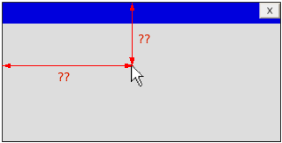
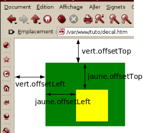
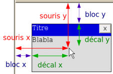
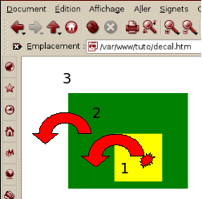
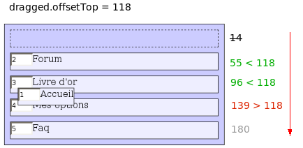

Vous avez sûrement déjà vu ces sites web où certaines icônes ou fenêtres sont déplaçables à la souris, ou alors où un texte suit le curseur. Vous vous êtes peut-être demandé comment réaliser ce genre d'effet. Avec du Javascript oui, mais encore ? Le sujet semble parfois complexe car tous les navigateurs ne sont pas compatibles.
Mais ne fuyez pas ! Attendez ! Je vais expliquer (du moins, essayer) clairement comment déplacer des éléments dans une page web grâce aux déplacements de la souris et j'espère bien vous voir devenir des pros de cette technique qu'on appelle parfois le "drag & drop". :soleil:
Vous devriez être déjà assez à l'aise avec le HTML, le Javascript et le DOM pour bien comprendre ce tutoriel. ;)
Si vous avez déjà eu l'occasion de travailler dans un repère en maths (nan! ne partez pas !), vous savez sûrement déjà ce que sont les coordonnées. Les coordonnées sont composées de deux nombres ici :
l'abscisse, que l'on va souvent nommer x qui contient la distance par rapport au bord gauche de la page ;
l'ordonnée, qui sera contenue dans la variable y qui contient la distance par rapport au bord supérieur de la page.
La position de la souris se récupère via une variable particulière qui s'appelle event. Mais n'essayez pas d'utiliser cette variable directement : elle n'existe pas d'habitude. Pour l'utiliser, il faut déclencher un évènement. Tous les évènements qui ont un rapport avec la souris marchent : onclick, ondbclick, onmousemove, onmousedown, onmouseup, etc.
La variable event indiquera donc la position de la souris au moment du onclick au moment où cet évènement est déclenché (donc à chaque clic, cela va créer une nouvelle variable event).
Trois cas se présentent suivant la façon dont vous associez des évènements aux objets HTML de votre page.
Cas n°1 : assigner un évènement en HTML
Si pour ajouter un évènement à votre page, vous l'écriviez dans le code HTML :
vous avez juste à rajouter cette nouvelle variable :
<script type="text/javascript">
function onclick_page(event)
{
//ici, on va se servir de la variable event ^^
alert(event);
}
</script>
<input type="button" id="bouton_click" onclick="onclick_page(event);" value="Click!" />
Cas n°2 : assigner un évènement dynamiquement avec la méthode DOM-0
Le DOM-0 permet d'ajouter des évènements en modifiant une variable :
Il va falloir modifier légèrement le début de la fonction. La plupart des navigateurs transmettent bien une variable event à la fonction, sauf Internet Explorer où la variable event est globale. Pour concilier tous les navigateurs, il va falloir préciser tous les cas possibles :
function onclick_page(event)
{
if( window.event)
event = window.event;
//On peut aussi écrire: event = event || window.event;
//ici, on va se servir de la variable event ^^
alert(event);
}
Cas n°3 : assigner un évènement dynamiquement avec addEventListener (DOM-2)
Si vous utilisez la fonction addEventListener (et attachEvent pour Internet Explorer), il n'y a pas grand-chose à modifier :
function onclick_page(event)
{
//ici, on va se servir de la variable event ^^
alert(event);
}
var objet = document.getElementById('bouton_click');
if( objet.addEventListener)
objet.addEventListener('click',onclick_page,true);
else //pour ie
objet.attachEvent('onclick',onclick_page);
Personnellement, j'ai écrit une petite fonction pour ne pas avoir à toujours taper cette condition :
Notre but principal est de récupérer les coordonnées de la souris ; pour cela, on a récupéré la variable event et celle-ci possède les propriétés qui nous intéressent : clientX et clientY.
Aller, un premier exemple avec onclick :
<!DOCTYPE html PUBLIC "-//W3C//DTD XHTML 1.0 Transitional//EN" "http://www.w3.org/TR/xhtml1/DTD/xhtml1-transitional.dtd">
<html>
<head>
<title>test coordonnées</title>
<script type="text/javascript">function onclick_page(event)
{
var x = event.clientX;
var y = event.clientY;
alert('Vous avez cliqué au point de coordonnés: ' + x + ', ' + y );
}</script>
</head>
<body onclick="onclick_page(event);">
</body>
</html>
Au lieu d'ouvrir une boîte de dialogue (alert), faites en sorte que le message apparaisse dans une zone de texte dans la page web. Ensuite, remplacez l'évènement onclick par un évènement onmousemove. Les coordonnées vont être mises à jour à chaque déplacement de la souris !
Correction
Si vous avez besoin d'un moyen pour connaître l'état d'une variable (pour déboguer), il faudra utiliser des fonctions comme console.debug (pour firebug).
<!DOCTYPE html PUBLIC "-//W3C//DTD XHTML 1.0 Transitional//EN" "http://www.w3.org/TR/xhtml1/DTD/xhtml1-transitional.dtd">
<html>
<head>
<title>test coordonnées</title>
<script type="text/javascript">
function souris(event)
{
var x = event.clientX;
var y = event.clientY;
document.getElementById('coordonnes').value = x + ', ' + y;
}
</script>
</head>
<body onmousemove="souris(event);">
<div id="info">
Coordonnées de la souris : <input type="text" id="coordonnes" value="inconnues" readonly="readonly" />
</div>
</body>
</html>
On peut placer une balise HTML exactement là où on le souhaite grâce au style CSS et à l'utilisation des positions absolues. Il suffit alors d'indiquer à l'aide des propriétés left et top l'abscisse et l'ordonnée de l'élément. Par exemple, pour placer le div qui porte l'id info (dans l'exemple précédent), à 30 pixels du bord gauche et à 100 pixels en dessous de la page, on ferait :
On va commencer notre script qui imite des fenêtres. Il nous faut déjà un bloc (div) jouant le rôle de fenêtre déplaçable ainsi qu'un autre bloc pour la barre de titre. Enfin, un petit bouton pour minimiser pourrait également servir.
On obtient donc un code HTML de ce genre :
<div id="fenetre">
<div class="barre" onmousedown="start_drag(document.getElementById('fenetre'), event);">
<button class="close" onclick="document.getElementById('fenetre').parentNode.removeChild(document.getElementById('fenetre'));">X</button>
Titre
</div>
Contenu de la page !!
</div>
J'ai déjà rajouté un évènement onmousedown sur la barre de titre, qui va appeler notre fonction et déclencher le début du déplacement.
On stockera l'élément en cours de déplacement dans une variable : dragged (c'est moi qui ai décidé de l'appeler comme ça :p ) et on va avoir besoin de deux autres évènements :
onmousemove pour déplacer l'élément à chaque mouvement de souris ;
onmouseup qui se chargera d'arrêter le déplacement lorsqu'on lâchera la souris.
Je vous laisse essayer un peu avant de vous montrer comment j'ai fait (il y a sûrement plusieurs méthodes).
Correction
Ci-dessous le style CSS ajouté ; sûrement une question de goût et le mien est assez mauvais. Voilà mon résultat (avec les artistes que vous êtes, je suis sûr que vous avez fait mieux :p ) :
Pour le code Javascript, j'ai décidé de commencer à rajouter les évènements (onmousemove et onmousedown) dynamiquement sans avoir à toucher au code HTML. Pour "capter" le maximum de déplacement, on va fixer ces évènements sur l'élément HTML le plus haut possible : document.
var dragged = null; //L'élément en cours de drag
//Lorsque dragged = null, il n'y a rien en cours de déplacement
function start_drag(objet,event)
{
dragged = objet; //On le place comme objet en cours
}
function drag_onmousemove(event) //Lorsque la souris se déplace
{
if( dragged ) //s'il n'y a pas d'élément en cours de déplacement, inutile de le déplacer :)
{
var x = event.clientX;
var y = event.clientY;
dragged.style.position = 'absolute';
dragged.style.left = x + 'px';
dragged.style.top = y + 'px';
}
}
function drag_onmouseup(event) //Lorsque le bouton de la souris est relâché
{
dragged = null; //On arrête le drag & drop
}
//Ma petite fonction "magique" pour ajouter des évènements
function addEvent(obj,event,fct)
{
if( obj.attachEvent)
obj.attachEvent('on' + event,fct);
else
obj.addEventListener(event,fct,true);
}
//On ajoute les deux évènements avec la méthode
addEvent(document,'mousemove',drag_onmousemove);
addEvent(document,'mouseup',drag_onmouseup);
Un bug assez gênant apparaît pendant le déplacement : le texte est sélectionné, et c'est assez moche comme effet. :-° De la part du navigateur, c'est assez logique : quand on enfonce un bouton de la souris et qu'on la déplace, c'est pour sélectionner du texte, c'est ce qu'il doit se passer par défaut. Ici, ce n'est pas ce qu'on souhaite faire et il faut donc annuler ce comportement par défaut :
//des lignes à rajouter dans start_drag:
event.returnValue = false; //Pour Internet Explorer
if( event.preventDefault ) event.preventDefault();
(Cela ressemble beaucoup à return false; que l'on voit souvent.)
Prendre en compte le scroll
Si vous avez eu l'occasion de tester ce code et que vous avez scrollé (bougé l'ascenseur, vertical ou horizontal), vous avez sûrement remarqué un décalage . Il faut donc rajouter à x et y la position actuelle des ascenseurs (horizontaux et verticaux):
var x = event.clientX + (document.body.scrollLeft || document.documentElement.scrollLeft);
var y = event.clientY + (document.body.scrollTop || document.documentElement.scrollTop);
Et voilà, on sait déplacer un bloc en fonction des mouvements de la souris mais ...
Oui mais... la souris reste toujours accrochée au même endroit, c'est nul !! :(
Il faut garder le même décalage entre la souris et le bloc tout au long du déplacement !
On a vu comment connaître la position de la souris mais non la position (initiale) d'un élément. Dans la plupart des cas, il faut effectuer un décalage vers la gauche et le haut, donc enlever (soustraire) aux coordonnées de la souris une certaine valeur.
On peut procéder par tâtonnement. Par exemple pour décaler de 100 et 60 pixels :
element.style.left = x - 100 + 'px';
element.style.top = y - 60 + 'px';
Mais ça serait mieux avec des valeurs exactes.

À la fin de ce tutoriel, on saura comment centrer un bloc au-dessus de la souris et comment conserver le décalage initial entre la souris et nos "fenêtres".
On veut centrer le bloc autour de la souris lors du déplacement.
Il faut donc connaître la largeur et hauteur du bloc pour les diviser par 2 et obtenir le décalage permettant de centrer le bloc.
Citation
Cool, et bah on a juste à utiliser style.width et style.heigth. :-°
Non! J'ai une meilleure méthode à vous proposer !
Premièrement, si on s'appuie sur le style CSS, on n'est pas sûr qu'il s'agisse de la bonne largeur (elle peut ne pas être définie ou le texte peut déborder). Il vaut mieux utiliser les propriétés offsetWidth et offsetHeight.
Je vous laisse modifier le code de notre script de fenêtre pour que le bloc reste centré :
x -= dragged.offsetWidth / 2; //On décale vers la gauche, donc -
y -= dragged.offsetHeight / 2;
Comment connaître la position initiale d'un bloc ? On pourrait utiliser .style.top et .style.left mais si je vous en parle, c'est qu'il y a forcément mieux. :-°
On va utiliser offsetLeft et offsetTop qui nous donnent les coordonnées x et y d'un élément HTML par rapport à son conteneur (offsetParent). Là où ça se complique, c'est que le conteneur lui-même possède des propriétés offsetLeft et offsetTop par rapport à un autre conteneur ! :p

Il faut donc tout additionner en remontant de conteneur en conteneur jusqu'à arriver à la page entière elle-même.
var elementX = 0;
var elementY = 0;
var element = objet;
while(element)
{
//On rajoute des coordonnées
elementX += element.offsetLeft;
elementY += element.offsetTop;
element = element.offsetParent;
}
En réalité, on va s'arrêter dans la boucle dès que l'on trouve un premier élément en position absolue.
do //On utilise un do-while au lieu d'un while car la cible elle-même est en position absolue (vu qu'on va la déplacer)
{
//On rajoute des coordonnées
elementX += element.offsetLeft;
elementY += element.offsetTop;
element = element.offsetParent;
}while(element && element.style.position != 'absolute');
Maintenant que l'on possède les coordonnées, on peut connaître le décalage initial qui existe entre la souris et le bloc lui-même. Décalage qu'il va falloir conserver au cours du déplacement :

Pas besoin de plus d'explications je pense, vous pouvez essayer par vous-mêmes (ou... si vous êtes paresseux, regarder directement comment faire :-° ).
Correction
Ce décalage, on le calcule au départ (fonction start_drag) et on le stocke dans deux variables (dX et dY). On le réapplique ensuite lors du déplacement.
//Partie du code ayant changé
var dX, dY;
function start_drag(objet,event)
{
dragged = objet;
event.returnValue = false;
if( event.preventDefault ) event.preventDefault();
//Coordonnées de la souris
var x = event.clientX + (document.documentElement.scrollLeft + document.body.scrollLeft);
var y = event.clientY + (document.documentElement.scrollTop + document.body.scrollTop);
//Coordonnées de l'élément
var eX = 0;
var eY = 0;
var element = objet;
do
{
eX += element.offsetLeft;
eY += element.offsetTop;
element = element.offsetParent;
} while( element && element.style.position != 'absolute');
//Calcul du décallage
dX = x - eX;
dY = y - eY;
}
function drag_onmousemove(event)
{
if( dragged )
{
var x = event.clientX + (document.documentElement.scrollLeft + document.body.scrollLeft);
var y = event.clientY + (document.documentElement.scrollTop + document.body.scrollTop);
//On applique le décalage
x -= dX;
y -= dY;
dragged.style.position = 'absolute';
dragged.style.left = x + 'px';
dragged.style.top = y + 'px';
}
}
On sait récupérer les coordonnées de la souris, des éléments, leur décalage. À partir de là, on peut imaginer plein d'applications. :) Il faut surtout un peu d'imagination et... parfois un peu de mathématiques ! Mais comme vous avez pu le voir, la plupart du temps, c'est surtout des additions, soustractions, multiplications et divisions. :-°
Dans tous nos scripts précédents, on était obligés de mettre des évènements onmousedown partout, sur chaque élément que l'on voulait déplacer. En règle générale, il est normalement déconseillé de mélanger le Javascript avec le code HTML à l'intérieur d'une page, car il faut séparer le contenu (HTML), de la présentation (CSS) et du comportement (Javascript).
Alors, au chargement de la page, on pourrait assigner dynamiquement chaque évènement sur chaque bloc :
function rendre_deplacable(objet)
{
addEvent(objet,'mousedown',function (event) {
start_drag(objet, event);
});
}
window.onload = function ()
{
var elements = document.getElementsByTagName('div'); //on va rendre déplaçables toutes les div
for( var i = 0; i < elements.length; i++)
{
rendre_deplacable(elements.item(i));
}
}
Mais ensuite, si on rajoute de nouveaux div dans notre page (dynamiquement), ils ne seront pas déplaçables ?
Eh non. :( À chaque nouveau div, il faudra rajouter l'évènement Javascript qui va avec. On pourrait utiliser la fonction rendre_deplacable() mais on va apprendre ici une nouvelle méthode.
On a placé un évènement onmousedown sur le div jaune, pourtant, il ne se déplace jamais ! C'est toujours le vert qui bouge !?
C'est dû à la propagation des évènements. Lorsqu'on clique sur le div jaune, on clique également sur le div vert conteneur. La fonction start_drag est donc immédiatement appelée pour le div jaune puis pour le vert.

La fonctiononmousedown du bloc jaune est d'abord lue, puis celle du div vert, puis le onmousedown présent sur la page entière. Pour éviter, cette propagation, appelée "bubbling" (bouillonnement) car l'évènement se propage comme une bulle, il faut rajouter une ligne à la fin de start_drag :
On a vu que les évènements se propagent jusqu'à arriver sur l'objet document. Soyons fainéants (les programmeurs sont des fainéants :p ) et attendons qu'il arrive jusqu'au document plutôt que de placer des onmousedown partout.
C'est là qu'il falloir utiliser une autre propriété de l'objet event :) Sur la plupart des navigateurs, on utilisera event.target alors que sur Internet Explorer, il faudra utiliser event.srcElement.
Pour un code qui marche partout, on va donc créer une variable universelle :
var target = event.target || event.srcElement
Grâce à elle, on peut savoir sur quel élément précis on a cliqué (ou bougé) :
document.onclick = function (event)
{
event = event || window.event;
var target = event.target || event.srcElement;
var type;
if(target.nodeType == 1)
type = 'Tag: ' + target.tagName;
else
type = target;
alert('Vous avez cliqué sur ' + type);
};
Ce script permet de savoir sur quelle balise on a cliqué
Grâce à cela, on peut lancer directement un déplacement de bloc, sans avoir à ajouter un évènement sur le bloc en question :
Il va donc falloir trouver un moyen d'identifier les objets HTML que l'on a le droit de bouger et ceux qui sont fixes. Je vous propose donc d'utiliser les classes pour identifier ce qui est déplaçable.
On va placer une classe sur les éléments de la page qui ont le droit d'être déplacés. Par exemple, on va mettre la classe deplacable. Lorsqu'on clique sur un élément, on clique aussi sur son parent. Il va falloir tester l'existence de la classe sur tous les parents de la cible jusqu'à en trouver un qui possède la classe que l'on désire ou si on n'en trouve aucun, ne rien faire :
addEvent(document,'mousedown',function (event)
{
var target = event.target || event.srcElement;
var element = target;
while(element)
{
if( element.className && element.className == 'deplacable')
{
start_drag(element, event);
element = false; //On stoppe la boucle : sinon, on va se retrouver avec le même problème que le bubbling car le déplacement va aussi se déclencher pour les parents
}
else
element = element.parentNode; //Sinon, on continue à remonter dans les ancêtres de la cible
}
});
Tester : pensez aussi à rajouter class="deplacable" sur le div de la fenêtre.
Plusieurs classes
Et si on profitait du fait qu'il est possible de mettre plusieurs classes sur un même tag HTML ? Il suffit de séparer par un espace :
<div class="classe1 classe2 classe3"></div>
Avec une regex, on peut savoir si tel ou tel objet possède telle classe :
if( bloc.className && bloc.className.match(/\bclasse1\b/g) )
{
alert( 'Ce bloc possède bien la classe "classe1" !');
}
(Les \b sont des assertions pour indiquer un espace entre deux mots. ;) ) Comme on peut mettre plusieurs classes, on peut indiquer d'un côté le comportement Javascript de l'élément, et d'un autre côté l'apparence qu'il aura grâce au style CSS.
Nous allons modifier notre script de "fausses fenêtres" pour le rendre plus universel, nous n'aurons plus besoin de taper une seule ligne de code Javascript dans notre code HTML. Juste rajouter des classes pour identifier chaque élément de la fenêtre.
Je vous propose cette liste de classes :
window-base à placer sur la fenêtre elle-même pour indiquer que c'est elle qui bouge ;
window-move à placer sur les objets qui vont déclencher un déplacement (la barre des titres par exemple) ;
window-close à placer sur les boutons qui vont fermer la fenêtre.
window-min-max à placer sur les boutons qui vont maximiser ou non la fenêtre.
(On pourrait par exemple faire un système de barre des tâches, mais honnêtement, je suis trop paresseux ; je n'ai donc pas proposé le bouton "réduire" :p .)
Correction
On possède déjà une fonction start_drag mais il nous faut aussi des fonctions pour fermer et maximiser les fenêtres.
function min_max(fenetre)
{
if( fenetre.style.width != '100%' && fenetre.style.height != '100%') //si la fenêtre n'est pas déjà maximisée
{
fenetre.style.width = '100%'; //maximum largeur et hauteur
fenetre.style.height = '100%';
fenetre.style.position = 'absolute';
fenetre.style.left = 0; //à partir du coin en haut à gauche
fenetre.style.top = 0;
}
else
{
fenetre.style.width = '';
fenetre.style.height = '';
}
}
function close(fenetre)
{
fenetre.parentNode.removeChild(fenetre); //On peut enlever le bloc du document
//ou: fenetre.style.display = 'none'; //ou alors le cacher avec du style CSS
}
Une fois ces fonctions créées, il faut rajouter un évènement onmousedown sur la page entière pour tout récupérer. On récupère dans un premier temps la fenêtre mais aussi les boutons pour savoir quelle action on doit faire.
function drag_onmousedown (event)
{
var target = event.target || event.srcElement;
//On commence par trouver la fenêtre elle-même
var fenetre = target;
while( fenetre)
{
if( fenetre.className && fenetre.className.match(/bwindow-baseb/g))
{
break; //On arrête la boucle
}
fenetre = fenetre.parentNode;
}
if( !fenetre) //Si on est sortis de la boucle mais qu'on n'a trouvé aucune fenêtre, on abandonne
return;
//Maintenant, on part à la recherche d'un bouton déclencheur
var element = target;
while(element)
{
if( element.className)
{
if( element.className.match(/\bwindow-close\b/g))
{
close(fenetre);
break;
}
else if( element.className.match(/\bwindow-min-max\b/g) )
{
min_max(fenetre);
break;
}
else if( element.className.match(/\bwindow-move\b/g) )
{
start_drag(fenetre, event);
break;
}
}
element = element.parentNode;
}
}
addEvent(document,'mousedown',drag_onmousedown);
J'ai légèrement modifié le code de la feuille de style pour ne plus faire référence à des id mais uniquement à des classes. On peut alors créer plusieurs fenêtres avec un simple copier-coller sans avoir de problèmes au niveau des id qui doivent être uniques.
En assignant un seul évènement Javascript : onmousedown sur la page entière, on a pu créer un système qui déplace juste certains blocs. Il n'y a plus de code Javascript parasite à l'intérieur du code HTML, les attributs classes permettent de dire comment va se comporter tel ou tel élément.
Notre système sépare le contenu de la présentation et du comportement. :)
La première partie du tutoriel est terminée. On sait déplacer un objet, pour qu'il suive la souris. On a vu comment obtenir un décalage et aussi comment connaître l'élément qui est survolé par la souris.
Pour faire des scripts plus évolués, c'est surtout une histoire d'innovation (ou plutôt d'imagination ? :p ).
Ce dernier chapitre sur la gestion des fenêtres n'est pas essentiel pour la suite. Nous allons juste faire quelques petites améliorations pour avoir un script terminé totalement. Passez votre chemin si vous n'êtes pas intéressés par le système de fenêtres ou si vous voulez juste vous servir du script sans rien comprendre, lisez la conclusion. :p
On peut créer toute une armée de fenêtres uniquement avec les classes et les styles CSS. Mais il se pose un dernier problème (si vous avez testé le dernier exemple) : la fenêtre en cours de déplacement ne passe pas au-dessus des autres.
Pour régler l'ordre de superposition des blocs, on utilise la propriété CSS z-index. Plus z-index est grand, plus il est placé devant les autres blocs. Pour faire revenir un bloc au premier plan, il faut connaître le z-index maximum sur la page pour placer notre nouveau bloc au-dessus des autres.
On va donc faire une boucle pour récupérer le plus grand z-index et en trouver un encore plus grand :
//à rajouter dans drag_onmousedown
var elements = document.getElementsByTagName('*'); //On récupère tous les éléments de la page
var zIndex = 0;
for( var i=0; i < elements.length; i++)
{
zIndex = Math.max(zIndex,elements[i].style.zIndex);
}
fenetre.style.zIndex = zIndex + 1; //toujours plus haut que le plus haut
Tester : les blocs passent les uns au-dessus des autres
Je vous avais dit que les styles CSS left et top indiquent la position horizontale et verticale du bloc par rapport au premier ancêtre en position absolue. C'est pour cela qu'on avait mis la condition :
element.style.position != 'absolute'
Seulement, cette condition est fausse car la propriété style ne prend pas en compte les feuilles de style externes. Voilà un exemple :
Le alert va afficher une chaîne vide "", car position a été indiqué dans la feuille de style et non pas dans l'attribut HTML style.
Il nous faut donc récupérer la véritable valeur du style (ici, la position), et je vous propose cette fonction (sans vraiment vous expliquer comment elle fonctionne :p ) :
//utilisation : au lieu d'écrire element.style.position, on écrira getCssStyleValue(element,"position");
function getCssStyleValue(element /*element html*/, style/*style recherché*/)
{
if( element.currentStyle )
{
return element.currentStyle[style];
}
else
{
return window.getComputedStyle(element,null).getPropertyValue(style);
}
}
Notre boucle qui calcule le décalage horizontal (variable eX) et vertical (variable eY) devient donc :
//Coordonnées de l'élément
var eX = 0;
var eY = 0;
var element = objet;
do
{
eX += element.offsetLeft;
eY += element.offsetTop;
element = element.offsetParent;
} while( element && getCssStyleValue(element, 'position') != 'absolute'); //<--
Pensez aussi à copier-coller la fonction getCssStyleValue dans votre code source ;) .
Le script pour maximiser / minimiser était assez simplet, en voilà une version améliorée qui conserve les anciennes positions et dimensions initiales (avant maximisation) :
(en fait, il n'y a pas grand-chose à expliquer, le code parle de lui-même)
//Nouvelle fonction min_max
function min_max(fenetre)
{
if( ! fenetre.max )
{
fenetre.max = true;
fenetre.oldTop = fenetre.style.top;
fenetre.oldLeft = fenetre.style.left;
fenetre.oldWidth = fenetre.style.width;
fenetre.oldHeight = fenetre.style.height;
fenetre.style.top = 0;
fenetre.style.left = 0;
fenetre.style.width = '100%';
fenetre.style.height = '100%';
}
else
{
fenetre.max = false;
fenetre.style.top = fenetre.oldTop;
fenetre.style.left = fenetre.oldLeft;
fenetre.style.width = fenetre.oldWidth;
fenetre.style.height = fenetre.oldHeight;
}
}
//À modifier aussi, pour empêcher le déplacement lorsque maximisé :
//Au début de start_drag():
function start_drag(objet,event)
{
if( objet.max) return; //on quitte la fonction
dragged = objet;
//[...]
Pour éviter les conflits entre plusieurs scripts, on a utilisé addEventLister (et attachEvent). Les variables et les fonctions que l'on utilise ne sont pas utilisées (de l'extérieur) car on se base uniquement sur les classes ; il n'est donc pas utile de rendre les variables globales et on évitera ainsi des problèmes de compatibilité avec d'autres scripts.
Les variables (et fonctions) déclarées à l'intérieur d'une fonction sont inaccessibles de l'extérieur : c'est le principe des cloisons en Javascript. On va créer une fonction anonyme qui va contenir tout notre code. Et cette fonction anonyme sera lue immédiatement :
(function () { //Début du cloisonnement
//Code invisible de l'extérieur
})(); //Fin du cloisonnement
Notre script est fini ! :) On aurait pu aussi gérer le redimensionnement mais c'est assez répétitif à coder (droite, gauche, haut, bas, diagonales...) et pas très dur, alors je vous laisse le faire. :p
Récapitulons le fonctionnement de ce script. Il fonctionne sur la base des classes (attribut class en HTML) que l'on place sur chaque balise HTML. Il y a au total 4 classes :
window-base qui est à placer sur la balise de la fenêtre elle-même.
window-move à placer sur les balises qui vont déclencher le déplacement de la fenêtre (barre de titre par ex.) ;
window-min-max qui indique un bouton pour maximiser / restaurer une fenêtre ;
window-close pour les boutons qui ferment la fenêtre.
Ce qui donne par exemple le code HTML suivant :
<div class="window-base">
<div class="window-move" >
<button class="window-close">X</button>
<button class="window-min-max">[]</button>
Barre de titre
</div>
Contenu
</div>
Un élément souvent bien pratique dans les formulaires manque à la panoplie des balises (x)html : les listes ordonnées. Par exemple, pour choisir l'ordre dans lequel des menus apparaissent, ou alors établir une liste des préférences ou des priorités d'un visiteur.
Des solutions en html pur, sans javascript, existent, mais ne sont pas toujours très pratiques.
Ainsi, notre formulaire sera accessible, avec ou sans javascript :) !
Notre script va beaucoup ressembler à notre bon vieux code de gestions de "fausses fenêtres". On aura besoin des fonctions :
onmousedown, chargée de chercher les classes concernées et commencer le déplacement.
onmousemove, pour déplacer le div en cours de déplacement.
onmouseup, qui va arrêter le déplacement.
Et des variables :
dX et dY, les décalages entre le haut du bloc en déplacement et la souris
dragged, l'objet en déplacement (objet li).
liste, la liste ordonnée (objet ol, className="liste") qui contient dragged.
Dans un premier temps, on se contentera d'enlever la position absolue du bloc en déplacement lors du relâchement de la souris. Cela aura pour effet de faire revenir le bloc à sa position initiale. Comme cette partie a un petit air de déjà-vu (le code ressemble fortement à celui du chapitre précédent :p ), je vous laisse essayer de faire ce script ;) .
Correction
La fonction de click de souris est un peu plus compliquée: il faut récupérer deux balises à partir de leur className. Mais finalement le code n'est pas méchant, quoique un peu long... :-°
//addEvent et getCssStyleValue sont définies comme dans les chapitres précédents
var dragged = null; //balise li en cours de déplacement
var liste = null; //balise ol en cours de modification
var dX, dY; //Décalages
function list_onmousedown(event)
{
var target = event.target || event.srcElement;
//S'il y a déjà un li en déplacement, on "simule" un évènement onmouseup en premier
if( dragged ) list_onmouseup(event);
//A la recherche d'une balise ol class="liste"
var element = target;
while(element)
{
if( element == null ) //si element = null, alors on n'a rien trouvé, on quitte cette fonction
return;
else if( element.className && element.className.match(/\bliste\b/) )
break;
element = element.parentNode;
}
liste = element;
//Reste maintenant à trouver le "li" déplacé
var element = target;
while(element)
{
if( element == liste) //On est remonté jusqu'à la liste elle-même, cela signifie que l'on n'a pas cliqué sur une balise li
return;
else if ( element.tagName && element.tagName.toLowerCase() == 'li' )
break;
element = element.parentNode;
}
dragged = element;
//On annule le comportement par défaut:
event.returnValue = false;
event.preventDefault && event.preventDefault();
//On calcule les décalages
dX = event.clientX + document.documentElement.scrollLeft + document.body.scrollLeft;
dY = event.clientY + document.documentElement.scrollTop + document.body.scrollTop;
var element = dragged;
do
{
dX -= element.offsetLeft;
dY -= element.offsetTop;
element = element.offsetParent;
} while( element && getCssStyleValue(element, 'position') != 'top');
dragged.style.width = dragged.offsetWidth + 'px';
dragged.style.height = dragged.offsetHeight + 'px';
//On simule un premier déplacement
list_onmousemove(event);
}
Tester ! Pas d'inquiétude, on va s'occuper de l'insertion ! Il y quand-même quelques remarques sur ce code :
Afin de corriger quelques petits bugs (par exemple, un bloc qui reste en position absolue), on simule le déplacement de la souris ou le relâchement du bouton en appelant nous-mêmes certaines fonctions lignes 12 et 58.
J'utilise tagName.toLowerCase() pour être sûr que le tag est comparable à "li" ( "LI" != "li") ligne 33.
Lorsqu'un élément est en position absolue, il perd sa largeur (voici le problème). Ce n'est pas très beau alors on fixe manuellement la largeur (et la hauteur, tant qu'on y est) lignes 54-55.
Pour les deux autres fonctions, c'est la routine :soleil: :
Pour ce genre de drag&drop, il est utile de savoir où le bloc en déplacement va atterrir.
Ce bloc "fantôme" va aussi nous servir pour placer facilement le li en déplacement au bon endroit à la fin du drag&drop (il suffira d'utiliser la méthode dom replaceChild). De façon totalement originale ^^ , j'ai nommé la variable correspondante ghost :
var ghost = document.createElement('li');
//Pour le différencier un peu des vraies "div"
ghost.style.backgroundColor = 'transparent';
ghost.style.borderStyle = 'dashed';
On pourrait aussi lui attribuer une classe spéciale (className="ghost" par exemple) et modifier la feuille de style.
Insertion initiale
Pour placer ce fantôme, on va utiliser la méthode dom insertBefore qui s'utilise comme suit :
Il faut l'insérer dans la liste au moment du début du déplacement (onmousedown) :
liste.insertBefore(ghost, dragged); //On insère le fantôme juste avant le div que l'on déplace
Déplacement
Ensuite, à chaque déplacement de la souris (onmousemove), il va falloir déplacer de nouveau ce bloc fantôme, pour indiquer la position d'arrivée du drag&drop. On va encore utiliser insertBefore.
Mais avant quel bloc faut-il l'insérer ?
Pour le savoir, on va comparer le offsetTop appartenant au bloc aux autres offsetTop, et on s'arrêtera au premier qui est supérieur.
Exemple

On parcourt la liste de haut en bas :
Le premier bloc est le fantôme, on l'ignore.
Le bloc 2 est situé plus haut que le curseur, on passe.
Le bloc 3 est situé plus haut que le curseur, on passe (bis).
Le bloc 4 est situé plus bas, on s'arrête ici.
Tout cette succession se résume par une boucle, et une condition d'arrêt (plutôt longue !) :
var avant = null; //La balise que l'on va utiliser pour insertBefore()
//On va parcourir tous les enfants direct de notre liste
for( var i = 0; i < liste.childNodes.length; i++)
{
var el = liste.childNodes.item(i);
//Premièrement il faut s'assurer qu'il s'agit bien d'une balise (tagName) puis d'une balise li
//Ensuite, on exclut de nos tests la balise ghost elle-même ainsi que la balise en cours de déplacement
//Enfin, on vérifie les valeurs de offsetTop
if( el.tagName.toLowerCase() == 'li' && el != dragged && el != ghost && el.offsetTop > dragged.offsetTop )
{
avant = el;
break; //On a trouvé où insérer le fantôme, on arrête la boucle
}
}
Et si l'élément qui se déplace est situé tout en bas, et qu'il n'y a rien après ? On ne peut pas trouver de div pour insérer avant ?
Dans ce cas, la variable avant vaut null et on utilisera la fonction appendChild à la place :
liste.removeChild(ghost); //Il faut déjà l'enlever, pour pouvoir le mettre ailleurs
if( avant == null )
liste.appendChild(ghost);
else
liste.insertBefore(ghost, avant);
Dernière optimisation : il serait bête d'enlever la balise fantôme pour la remettre au même endroit, ça va clignoter (beurk !). On peut utiliser la propriété ghost.nextSibling (next sibling = noeud/balise suivante) pour vérifier qu'elle n'est pas déjà au bon endroit :
if( avant != ghost.nextSibling ) //Si ghost est déjà bien placé
{
liste.removeChild(ghost);
if( avant == null )
liste.appendChild(ghost);
else
liste.insertBefore(ghost, avant);
}
Dans le cas où avant = null, cela marche aussi car nextSibling vaut aussi null.
Remplacement final
On a passé le plus dur :) Lorsque l'on relâche la souris (drag_onmouseup), il n'y a plus qu'à remplacer le bloc fantôme par le vrai bloc. Inutile de faire un dessin :p pour expliquer comment marche la fonction replaceChild ("remplacer nœud") :
liste.replaceChild(dragged, ghost); //remplace ghost par dragged (attention à l'ordre des paramètres)
Tester le script avec les trois ajouts de code (onmousedown, onmousemove et onmouseup).
Les balises li ont été déplacées mais les champs input à l'intérieur n'ont pas été changés pour indiquer le nouvel ordre. Comme l'ordre d'affichage des éléments correspond (en position non absolue !) à l'ordre des éléments dans l'arbre html, il suffit de les compter dans l'ordre :
var inputs = liste.getElementsByTagName('input');
var n = 1; //Compteur
for(var i = 0; i < inputs.length; i++)
{
if( inputs.item(i).className.match(/\bordre\b/) )
{
inputs.item(i).value = n++;
}
}
Tester cette version avec décompte. Ce code, qui doit s'exécuter après avoir remplacé le fantôme par le li déplacé, prend toutes les balises input, qui contiennent des informations d'ordre (class="ordre") et renumérote tout. C'est un peu bourrin, mais après tous les efforts que l'on a fourni, on peut bien se le permettre :-° .
Une fois que l'on a vérifié que ce script marche, les champs input deviennent inutiles (visuellement parlant). On va donc les cacher, avec javascript et cette nouvelle fonction pour rajouter des règles css dans la page :
//Fonction "magique" pour ajouter une règle css:
function insertCss(selector,rule)
{
if( document.styleSheets && document.styleSheets[0] )
{
var feuille = document.styleSheets[0];
if( feuille.insertRule ) //internet explorer
feuille.insertRule(selector + " { " + rule + " } ", feuille.cssRules.length);
else if( feuille.addRule ) //Pour firefox
feuille.addRule(selector,rule);
}
else //Pour le reste
{
var ss = document.createElement('style');
ss.setAttribute('type','text/css');
ss.appendChild(document.createTextNode(selector + " { " + rule + " } ") );
document.getElementsByTagName('head')[0].appendChild(ss);
}
}
Elle s'utilise ainsi :
insertCss('.ordre','display: none;');
//On en profite pour rajouter un curseur "spécial" pour le drag&drop
insertCss('.liste li', 'cursor: move;');
On peut remarquer que sans javascript, le formulaire fonctionnera toujours et c'est bien la force de ce système : on s'est basé sur un code html qui marchait, et on a rajouté du javascript autour sans toucher à la structure de la page ! Les styles css propres au javascript, pour cacher les input, ont été rajoutés par javascript. On ne risque ainsi pas de cacher des éléments nécessaires à l'utilisation de la page.
Si vous avez déjà utilisé des framework javascript qui réalisent ce genre de scripts, vous aurez remarqué qu'en général ces considérations sont mises de côtés : les pages webs nécessitent toujours javascript pour fonctionner.
Je ne blâme pas ces framework pour cela, car s'affranchir de ces contraintes permet de faire des pages "web 2.0" beaucoup plus puissantes et plus simplement surtout mais je tenais toutefois à montrer une autre méthode, plus artisanale :pirate: .
Idées d'amélioration
Faire un style css plus joli !
Rendre l'élément déplacé transparent.
Faire une petite animation, pour le déplacement d'un élément vers sa position finale.
Faire du drag&drop entre plusieurs listes.
Vérifier si l'on peut imbriquer les listes (après quelques petites corrections, ça fonctionne !).